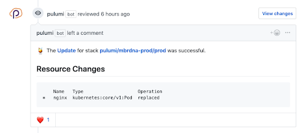
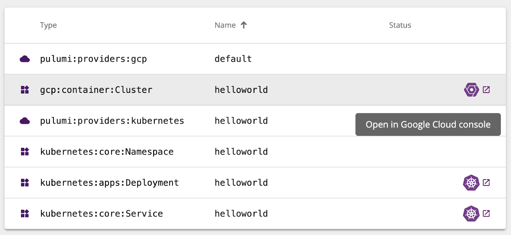

Pulumi ❤️ Google Cloud Platform

Google Cloud is one of the most exciting cloud platforms available today, with a breadth of powerful infrastructure services from Google Container Engine (GKE) and Google Cloud Functions to Cloud Firestore and Cloud Spanner.
Pulumi is the most productive tooling available today for teams building cloud applications and infrastructure, in your favorite languages. Add them together, and teams can easily take maximum advantage of Google Cloud Platform’s rich features, productively, with a combined platform that makes it easy to collaborate, share, and reuse.
In this post, we’ll highlight some of the top features of Pulumi that make it a joy to work with Pulumi + Google Cloud.
Infrastructure as Code for the Full Google Cloud Platform
Pulumi lets you define and deploy infrastructure as code using your favorite programming languages, including JavaScript, Python, and Go. Pulumi provides access to the full Google Cloud Platform – every resource (including beta resources!) is available directly in your programming language and IDE. This delivers the software engineering benefits of your programming language, combined with the reliable and repeatable deployments of infrastructure as code.
In this example, we define a new network, firewall, and compute instance, using Python:
import pulumi
from pulumi_gcp import compute
disk = {
'initializeParams': {
'image': "centos-cloud/centos-7-v20190116"
}
}
addr = compute.address.Address(resource_name='poc')
network = compute.Network("network")
network_interface = [
{
'network': network.id,
'accessConfigs': [{'nat_ip': addr.address}],
}
]
firewall = compute.Firewall("firewall", network=network.self_link, allows=[{
'protocol': "tcp",
'ports': ["22", "80"]
}])
instance = compute.Instance('poc', name='poc', boot_disk=disk, machine_type="f1-micro",
network_interfaces=network_interface)
pulumi.export('external_ip', addr.address)Infrastructure can be deployed and updated using the pulumi CLI, with
each update driving toward the desired state declared by the Pulumi
program. Before each update, you can see a preview of the changes that
will be made to your target infrastructure, and only after confirming
will it proceed (with a full audit history):
$ pulumi update
Previewing update (luke):
Type Name Plan Info
pulumi:pulumi:Stack gcp-instance-nginx-luke
~ ├─ gcp:compute:Firewall firewall update [diff: ~allows]
+- └─ gcp:compute:Instance poc replace [diff: ~bootDisk,name]
Resources:
~ 1 to update
+-1 to replace
2 changes. 3 unchanged
Do you want to perform this update? Yes
...
Learn more about working with Pulumi and Google Cloud infrastructure in this GCE Web Server tutorial.
Working with Kubernetes and Google Container Engine (GKE)
Pulumi also makes it easy to deploy resources to Kubernetes with access to the full Kuberentes API, across all object types and versions, using the same programming language and IDE experience. You no longer have to switch tooling at the boundary between GCP and Kubernetes. Instead, Pulumi gives you a single programming model for both.
In addition to the preview and auditing mentioned above, the Pulumi CLI also provides rich status and repeatable deployments to Kubernetes through its support for dependency-based orchestration of deployments:

And if you need a Kubernetes cluster, spinning one up with GKE using
Pulumi is a breeze. Best of all you have easy access to the full breadth
of configurability you might need: networking configuration, multiple
NodePools, or clusters in multiple regions/zones. And you can easily
add additional GCP infrastructure like managed databases, DNS
configuration, or other resources needed to have a fully functional
Kubernetes compute environment.
This example spins up a GKE cluster and uses Pulumi’s configuration system for easy parameterization:
from pulumi import Config
from pulumi_gcp.container import Cluster
# Read in some configurable settings for our cluster:
config = Config(None)
# nodeCount is the number of cluster nodes to provision. Defaults to 3 if unspecified.
NODE_COUNT = config.get('node_count') or 3
# nodeMachineType is the machine type to use for cluster nodes. Defaults to n1-standard-1 if unspecified.
# See https://cloud.google.com/compute/docs/machine-types for more details on available machine types.
NODE_MACHINE_TYPE = config.get('node_machine_type') or 'n1-standard-1'
# username is the admin username for the cluster.
USERNAME = config.get('username') or 'admin'
# password is the password for the admin user in the cluster.
PASSWORD = config.require('password')
# Now, actually create the GKE cluster.
k8s_cluster = Cluster('gke-cluster',
initial_node_count=NODE_COUNT,
node_version='latest',
min_master_version='latest',
master_auth={ 'username': USERNAME, 'password': PASSWORD },
node_config={
'machine_type': NODE_MACHINE_TYPE,
'oauth_scopes': [
'https://www.googleapis.com/auth/compute',
'https://www.googleapis.com/auth/devstorage.read_only',
'https://www.googleapis.com/auth/logging.write',
'https://www.googleapis.com/auth/monitoring'
],
},
)Learn more about using Pulumi with Kubernetes and GKE in this Hello GKE tutorial.
Super Simple Serverless with Google Cloud Functions
Serverless has never been simpler than it is with Pulumi + Google Cloud Functions. Thanks to Pulumi’s “magic functions”, we can write callbacks in our language of choice, using a natural event-driven style, and Pulumi will handle the rest.
For example, want to serve a simple HTTP API with no fixed costs? It’s just a few lines of code:
import * as gcp from "@pulumi/gcp";
let greeting = new gcp.cloudfunctions.HttpCallbackFunction("greeting", (req, res) => {
res.send(`Greetings from ${req.body.name || 'Google Cloud Functions'}!`);
});
export let url = greeting.httpsTriggerUrl;Or perhaps a pubsub topic that runs some custom code on every message received:
// Create a PubSub Topic
let requests = new gcp.pubsub.Topic("requests");
// Print out a log message for every message on the Topic
requests.onMessagePublished("newMessage", (data) => {
console.log(Buffer.from(data.data, "base64").toString());
});And for quick inner loop development, the
pulumi logs
command supports pulling logs for your Google Cloud Functions from
StackDriver, aggregating all compute logs in your program into one
unified stream:
$ pulumi logs
Collecting logs for stack dev since 2019-04-08T12:02:48.000-07:00.
2019-04-08T12:37:34.000-07:00[ newMessage-9d41c7a] Function execution started
2019-04-08T12:37:34.000-07:00[ newMessage-9d41c7a] {"hello": "world"}
2019-04-08T12:37:34.000-07:00[ newMessage-9d41c7a] Function execution took 70 ms, finished with status: 'ok'
Learn more about Pulumi support for Google Cloud Functions in this Simple Serverless Slackbot example.
Continuous Delivery with Google Cloud Build
Because Pulumi is infrastructure-as-code, the projects you deploy with Pulumi are robust and repeatable. Spinning up a testing or staging environment is simple, and continuously deploying infrastructure changes from commits and pull requests to your code is as easy as adding a few lines to your CI/CD system.
For teams working with Google Cloud Build, Pulumi deployments can be integrated into your continuous delivery with just a few steps. And for teams working with GitHub, Pulumi’s GitHub App gives you rich feedback on what changes will be deployed as part of a Pull Request, so you can see and approve infrastructure changes before they happen:

Learn more about integrating Pulumi with CI/CD in our continuous delivery documentation.
Managing Deployment with the Pulumi Console
In addition to the pulumi CLI for deploying and updating GCP
infrastructure, Pulumi is always connected to the Pulumi Console, which provides a rich interface for
viewing the history of your stacks and deployments, management of access
controls for teams, and details of all resources under management.
With deep links into the Google Cloud Console, Pulumi provides quick access to all resources in your project.

And because Pulumi works with both Google Cloud and Kubernetes resources at the same time, it’s just as easy to deep link into resources in the Kubernetes console as well!
You can check out the Pulumi Console at https://app.pulumi.com and create your first Pulumi GCP project with just a few clicks, with an array of New Project options to get you up and running quickly.
Next Steps
Here at Pulumi, we love working with GCP and Kubernetes, and we are constantly working on ways to make Pulumi the most productive (and most fun!) way to program the Google Cloud Platform.
Pulumi is free and open source. You can get started with Pulumi today.
Here are a few resources to learn more about working with Pulumi and GCP:
Posted on